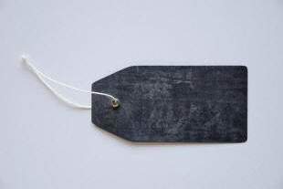
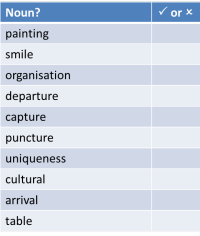
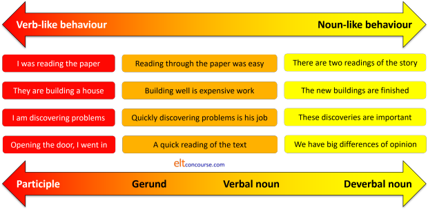
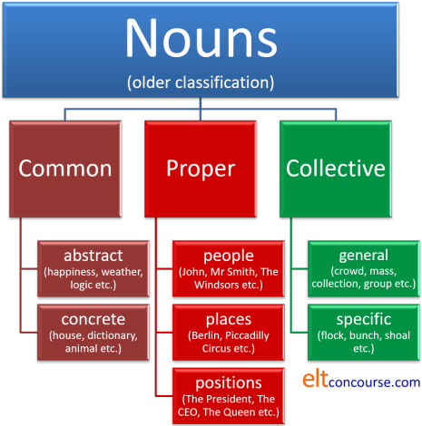
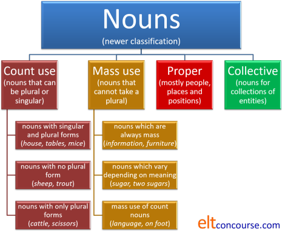
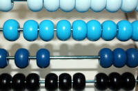
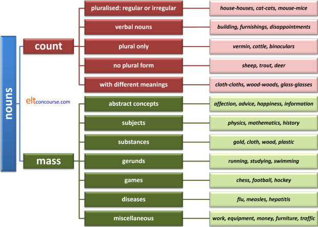
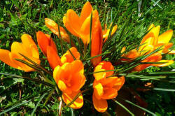

Nouns

This is a major word class but, oddly, sometimes neglected on the
basis that all languages have nouns so there can't be much to talk
about. The first part is true, the second much more debatable.
You may have seen nouns referred to in some analyses as
substantives but that is a rather old-fashioned term we
will avoid.
If this is your first visit feel free to take things as they come.
Alternatively, here's a guide to the contents.
Clicking on -top- at the end of each section will
bring you back to this menu.
Identifying nouns |
That's easy. Nouns are labels for things, aren't they? Well, yes and no. Which of the following would you classify as a noun? Click on the table when you have an answer.

- All of the above bar the word cultural can be nouns.
- Some can also function as verbs so, from the table above we
can also have:
He is painting
Smile!
I wanted to capture it alive
It punctured the tyre
He's tabling a new motion - Some nouns (most, in fact) can also function grammatically
as a type of adjective called a classifier. The difference
between a classifier and an adjective proper is that a
classifier refers to the type of noun we are modifying and an
adjective describes it.
From the list in the table, we can have the following as classifiers, i.e., adjectival in some way:
She went to painting classes
This is an organisation issue
What's the departure point?
What's the estimated arrival time?
He's famous for his table talk
at what point a noun acting to modify another noun as a classifier shades into a noun compounding with another is often unclear. For example, table talk might be considered a compound of two nouns rather than the noun table classifying the type of talk. - Form is not a reliable guide. Although there are a
number of suffixes which denote a noun (-ity, -ness, -ment-,
-tion, -hood etc.), there are others whose function is less
obvious (wishful, vs. handful, -ure
and -al endings, e.g., leisure, investiture,
chemical, pharmaceutical etc.). See the next section
for how nouns are formed.
In addition, not all nouns inflect for their plurals and some have no plural forms. - The only reliable guide to identifying nouns is not by looking at them, it's by seeing what they do.
 |
Forming nouns |
Because nouns are so central to any language, it will be
unsurprising to find that there are many ways in which they are
formed. Some nouns, of course, most, in fact, are simple
nouns, not formed from other words and having no obvious features
identifying them as nouns. There is nothing, for example,
about the form of words like:
house, car, problem, screen, key, joy, sky,
place
etc. which allows us to identify them as nouns. Only seeing
what they do in the syntax of the language allows us to classify
them accurately.
Other nouns are, however, clearly derived from words in other
classes. Here's a short list of the most frequent and obvious
ways nouns are formed by suffixation in English:
- -age
- This suffix refers to a generalised noun derived from a
particular case of another. Examples are:
drainage, leafage, percentage, package, parentage etc.
The suffix is also used to form nouns from verbs, again referring to a generalised concept from the verb, as in:
carriage, assemblage, marriage, towage, passage etc.
In fact, most words ending in -age are nouns and that is a helpful guide to learners. - -al
- This suffix is usually one which forms adjectives but these
can be converted into nouns such as:
musical, national, original, neutral, criminal etc.
Quite rarely, the suffix is used to form nouns from verbs as in, e.g.:
dismissal, portrayal, deferral, refusal etc.
Most words ending in -al are not nouns, however. The way to bet is that they are adjectives. - -an, -ant, -crat, -ee,-eer, -er, -ist, -ite, -or, -ster
- All these noun-forming suffixes refer to people in favour of
something, the doer of a verb or a person concerned with a field
of enquiry. The most common is -er which forms
new nouns readily from verbs. Others, such as -al
and -or are no longer productive. For example:
disciplinarian, vegetarian, republican, historian, inhabitant, participant, democrat, technocrat, escapee, employee, engineer, mountaineer, gardener, speaker, Marxist, fascist, socialite, actor, doctor, mobster, gangster etc.
The -ite ending is widely used in geology to describe types of minerals and rocks as in dolerite, anthracite, malachite and many more. - -ate
- This is a rare noun-forming suffix and usually forms causal
verbs such as truncate, desiccate and so on but it can be used
to form a noun from another as in, e.g.:
doctorate, subordinate, graduate, sophisticate etc.
It is also frequently used to denote chemical derivatives such as:
phosphate, carbonate, silicate etc. - -ation, -cation, -sion, -tion
- These are variations on a theme, all ending in -ion.
They readily form nouns from verbs such as:
replication, organisation, deification, electrification, decision, conversion, devotion, notation etc.
Almost all words ending in -ion are nouns of some description. - -ery (and -ory), -ry
- These suffixes are now almost fully unproductive but are
used to signal an activity or the place where an activity takes
place. Examples are:
brewery, bakery, conservatory, observatory, surgery, upholstery, hostelry, colliery etc. - -ese
- This suffix is mostly confined to people or types
of language and is sometimes used to invent new terms such as:
Japanese, Maltese, computerese, managementese, bureaucratese, teacherese etc.
This suffix is sometimes replaced by -speak as in BBC-speak, IT-speak, Cambridge-speak etc. - -ess
- This suffix was frequently used to form female versions of
male nouns so we used to have, e.g.:
stewardess, hostess, manageress, actress etc.
However, times change and the ending is now often disparaged as sexist language so all of the above, shorn of the ending can be used to describe people of either (or all) sex(es).
For non-human nouns, the suffix is still in frequent use, however, and we still encounter, e.g.:
tigress, lioness, goddess etc.
Even for humans, some -ess suffixes are still in common use for want of a better expression so we still encounter, e.g.:
duchess, marchioness, princess, seamstress etc.
A range of nouns have alternative male / female forms and they include, e.g.:
goose / gander, duck / drake, king / queen, sister / brother, uncle / aunt and a host more.
See the guide to gender, linked below, and the section in this guide on markedness, for more about sex marking on nouns. - -ful
- This suffix often forms adjectives but has a noun-forming
function to denote quantities such as:
handful, bottleful, carful, houseful etc. - -hood, -ship
- These suffixes refer to a stage in life or a condition such
as:
boyhood, adulthood, falsehood, childhood, neighbourhood, township, friendship, comradeship, guardianship etc. - -ism, -ocracy, -ology, -aphy, -apy
- These are all to do with political or moral positions or
fields of academia such as:
Marxism, Trumpism, democracy, autocracy, sociology, biology, geography, therapy etc. - -ity
- This suffix is used to derive nouns from adjectives ending
in -ible and -able and words are often coined
for the nonce with this suffix. For example:
availability, divisibility, permissibility, doability, pickupability, burnability etc. - -let, -ette
- These are confined to marking another noun for size such as:
leaflet, eyelet, kitchenette, launderette etc. - -man / -woman
- Both these suffixes denote the doer of an action and are
formed from verbs. Just like the -ess suffix,
however, the forms are now often disparaged as sexist language
so are less productive than they once were. We still
encounter, e.g.:
laundryman / laundrywoman, fisherman / fisherwoman, spokesman / spokeswoman, countryman / countrywoman, businessman / businesswoman and more.
See the guide to gender, linked below, and the section in this guide on markedness, for more about sex marking on nouns. - -ment, -ness
- Both these are productive suffixes denoting the state of
being in a position or having a quality. For example:
discernment, management, disappointment, happiness, gratefulness, forgiveness etc. - -ware
- This is a suffix derived from the old word ware meaning an item for sale, now only seen in the plural. It is still productive and the term in computing of software is only attested from 1960. Other terms such as spyware, bloatware and so on are even more recent.
 |
Verbal nouns, deverbal nouns and gerunds |
Missing from the list above is the ubiquitous -ing
suffix used to form nouns. Adding that suffix to a verb can
often form words which appear to be nouns (and sometimes are) but
which also retain some verbal qualities. For example, in:
Driving when you are tired is dangerous
we have the gerund form driving which is operating as a
noun and is the subject of the copular verb, be.
It does, however, retain some features normally associated with
verbs because:
- It may be followed by a direct object:
Driving cars when you are tired is dangerous - It may be modified by an adverb phrase rather than an
adjective:
Driving too quickly is dangerous - It cannot be pluralised so we do not allow *drivings.
Other formations are better described a verbal nouns or deverbal
nouns because they
have lost some or all verbal qualities and function grammatically just as
other nouns do.
Verbal nouns retain some verb-like qualities but deverbal nouns are
just nouns.
For example, in:
The old buildings are dangerous
we have a noun, building, derived from the verb build
which does not show any verbal qualities (in this case) so:
- It cannot be used with a direct object so we do not allow:
*The building the houses took a long time
and need to insert an of phrase to make the connection as in:
The building of the houses took a long time - It is modified by two adjectives, one attributive and one
predicative (old and dangerous) and it cannot
be modified by an adverb so we can't have:
*The building slowly took too long - It can be pluralised just like nearly all nouns by adding -s to the stem allowing buildings.
In the list above, there are other ways of making verbal nouns
using a variety of suffixes.
The distinction, briefly, is that gerunds retain
considerable verb-like features but verbal nouns
operate as all other nouns and have lost any verbal
characteristics.
The situation is not clear cut, however, and there is a cline from the gerund forms which retain verb-like characteristics and the pure nominal forms which are noun-like in their behaviour. The situation is:
For more on the distinction between participle verb forms, gerunds, verbal and deverbal nouns, see the guide to catenative verbs, linked below.
 |
How nouns function |
Here are some nouns being nouns. Can you identify the grammatical function of each word in black? Click here when you have done that.
- How do you feel about it, Mary?
- That's John, the boss.
- It looks like a crab.
- They made her the manager.
- The inspector is arriving tomorrow.
- She is inspecting the organisation.
- The animal is a crab.
- Who gave the children the food?
- I brought it for the staff.
- The window catch is broken.
- Here, the Proper noun, Mary, is functioning as the addressee. It's a vocative use normally only applied to people or animals but can be applied to other nouns although few of us spend any time addressing inanimate objects or abstract concepts.
- Here we have a noun in apposition. Functionally, John and the boss are the same thing.
- Here the noun a crab is the subject complement of the copular verb look like (the most common true copular verb is, of course, be).
- Here, the noun manager is the object complement of the verb.
- In this, the inspector is the subject of verb arrive.
- Here, the organisation is the direct object of the verb inspect.
- Here the animal is the subject of the copular verb be.
- In this, the children is the indirect object of the verb give.
- In this, the staff is the complement of the preposition for forming a prepositional phrase. In some analyses, this is referred to as the object of the preposition but, in order not to have any confusion between verb objects and prepositional objects, we will stick with the term complement.
- The word window here is acting as a classifier and tells us what sort of catch it is. The distinction between a phrase including a noun classifier (sometimes called a noun adjunct, attributive noun, qualifying noun, noun (pre)modifier, or apposite noun) and a compound noun is fuzzy.
In summary, to identify a noun we need to look at what it does in
the sentence and where it comes. If a word is performing any
of the above functions, the way to bet is that it's a noun or noun
phrase of some kind.
If any of the terms above, such as object, subject and indirect
object are unfamiliar to you, you can follow
a guide to objects and subjects on this site, linked in the list
of related guides at the end.
Here's the cut-out-and-keep summary of what nouns do and how to identify them from their grammatical (rather than communicative) function. In the examples, the noun performing the function is in italics.

 |
Classifying nouns |
The traditional classification
You may have learned at some time that there are three sorts of nouns. That's a traditional way to divide them, like this:
- Common nouns
- abstract (such as love, happiness, envy etc.)
- concrete (such as table, computer, paper etc.)
- Proper nouns (such as Birmingham, Peter, The Labour Party etc.)
- Collective nouns (such as army, flock, family, committee
etc.)
See the note below on the difference between collective and assemblage nouns.
In summary, the old classification looks like this:

The classification was based on what we understand the notion of
the noun is, not its grammatical function in a sentence.
This is a classification now considered somewhat out of date and
unreliable. Can you think why?
Click here when you have
an answer.
- The distinction between abstract and concrete nouns is not sustainable. It's clear that happiness does imply an intangible abstract quality but what about a word like smile? Is that an abstract or concrete thing? Something you can touch is clearly a concrete noun but things that you perceive in other ways are not so easily classified.
- Nouns can slip between categories such as these.
- The noun love may be an abstract in some cases
All we need is love
but in other cases, the word is clearly a concrete
He is one of the loves of her life. - The noun Jones is clearly a proper noun in, e.g.:
Ask Jones to do it
but can be a concrete common noun in
Ask the Jones who works in accounts to do it. - The noun Russia is a proper noun but the noun Russian behaves just like a common noun.
- The noun love may be an abstract in some cases
- Common nouns do not all behave in the same way. Some
are mass nouns which take no plural forms and occur with
singular-form verbs, such as information, furniture, water
etc. Some behave very differently and have plural forms
such as house, keyboard, window etc.
This fundamental and critical distinction between count and mass nouns is not one shared by many languages. Those languages which do not make the distinction (or in which the distinction is not grammatically significant) often have simple determiner systems. Speakers of such languages encounter serious problems in this regard when learning English and, in fact, may never internalise the distinction consistently.
The determiners which work with these two distinct sorts of nouns therefore vary, so we can have, e.g.:
some milk
some dogs
a few houses
etc.
but we can't have:
*a milk
*a little dogs
*much houses
etc.
A more modern classification
Most grammars these days classify nouns into four main categories based not on notions of meaning but on grammatical function. Like this:

There are two examples of each of the four main types in this list. Click here when you have sorted them into the 4 main categories.
- The crew mutinied.
- Do you take milk?
- She climbed Mount Snowdon in the winter.
- The sheep are coming down the hillside.
- He moved the pictures downstairs.
- I've never been to Amsterdam.
- The majority were (?was) in favour.
- We keep the china over there.
Answers:
1 and 7 are collective nouns.
2 and 8 are mass nouns.
3 and 6 are proper nouns.
4 and 5 are count nouns.
For a little more on how concord works with collective nouns, see the guide to the area, linked below.
In some analyses, we might add a fifth category, classifiers and partitives, because they exhibit phenomena unique to themselves. Examples are:
-
Classifiers:
He drives a sports car
He works in a steel plant
She's a reception manager
You are a language teacher -
Partitives:
Pass me a bit of bread
Use a length of rope
Replace a pane of glass
I have a pile of papers to get through
There are separate guides on this site, linked below, to classifiers, partitives and group nouns and to compounding.
 |
Choosing which classification to use |
For teaching purposes, both classifications have some utility:
- The notional, old-style, classification is useful when
meaning is the paramount consideration because the distinctions
between common, proper and collective nouns are intuitively easy
to grasp and the nouns which fall into these categories (with
the exception of the dubious concrete-abstract distinction)
exist in all languages and are handled similarly.
This kind of classification also sits well with communicative approaches because the focus is on notion not structure.- Common nouns are the most frequently encountered types and, if one distinguishes between mass and count noun uses, follow predictable patterns. Collocational aspects of common nouns are particularly obvious and any number of adjective + noun, verb + noun or noun + verb collocations can be the focus of teaching.
- Proper nouns are usually subjects or objects of verbs
and the only ones with which we use the vocative (addressee)
case. Some languages reserve a particular inflexion on
the noun to signal this.
Few adjective + noun collocational patterns, bar a few predicative adjectives, are observable with proper nouns at all.
Because these nouns are nearly always applied to human agents, the range of noun + verb collocations is predictable and teachable.
Most proper nouns do not take article determiners although the system is, as we shall see, frustratingly irregular. - Collective nouns need to be distinguished from
assemblage nouns (which are analysed in the guide to
partitives and classifiers (linked below)).
Collective nouns proper are those in which it is clear what the individual members are so we do not often need the of-construction. We can refer, therefore, to
an army
a congregation
a committee
my family
and so on.
Assemblage nouns, on the other hand, follow a predictable pattern: assembly noun + of + plural common noun + singular verb as in, e.g.:
a bunch of bananas was on the table
a crowd of schoolchildren was waiting
a queue of customers is outside
a pod of whales was seen
etc. although, in informal, casual speech, plural verb forms are often applied. More on that later.
- The more modern classification is more useful when structure
(i.e., colligation) is the focus.
- The same considerations apply to proper and collective nouns (because the categories are retained from the old classification).
- The more modern categorisation allows the focus to be put on mass vs. count properties which is fundamental to understanding how nouns work in English. Other languages often do not handle the concepts in the same way even when the distinction between mass and count nouns is maintained.
- The modern classification can also be helpful when handling meaning because the distinctions between nouns used to encode mass or count ideas can be handled more effectively once the main distinctions have been mastered.
 |
Types of nouns: salient features |
|  |
Count nouns |
This is the largest category in English and includes
- many
so-called concrete nouns for people and things:
child, girl, chair, house, day, pound, piece, part, bit etc. - some slightly less concrete concepts such as
event, accident, position, tune, coincidence etc. - a small group which have irregular plurals, usually
either taken from the language from which they come or from
older forms of English:
children, data, foci, oxen, mice etc. - a subset of the irregular plurals which contains those which have no
plural form at all. Often these are the names of animals:
sheep, trout, deer etc. - some count nouns which occur only in the plural, marked with 's' or
not:
cattle, people, vermin, glasses, binoculars, scales, jeans, belongings, clothes, surroundings
You may see such nouns described as uncountable or mass nouns. They are not. Grammatically, they are followed by a plural verb so, while the use of some may be slightly irregular, they are not mass nouns. Technically, nouns which only occur in the plural (or do so with a meaning distinct from the singular form such as the distinction between arms (weapons) and arm (limb)) are called pluralia tantum forms (the singular of which is plurale tantum). - Some count nouns which appear in different senses as mass nouns:
made of wood
vs.
cycling through the woods
some cloths to wipe it with
vs.
cloth is not expensive
See below on pluralisation for more.
Mass nouns |
Mass nouns are distinguishable because they can act as
arguments (e.g., as subjects and objects) in their bare form so
we allow, e.g.:
She gave advice
Money was helpful
but not
*They made suggestion
*Coin was heavy
and, of course, because they do not occur in the plural.
In fact, with two exceptions, count nouns cannot stand without a
determiner so, for example:
Q: What shall I clean it with?
A:
Water
A: *Brush
The exceptions are:
They walked arm in arm (an example of parallelism in which
apparently countable nouns are used to refer not to the items
themselves but to a concept or relationship in which case they are
considered as mass nouns)
Come here, child (a rare vocative use).
Mass nouns cannot occur with an indefinite article so we do not
allow, e.g.:
*a milk
*an alcohol
*a water
*an oxygen
etc.
See below for some more examples of what is sometimes called
idiomatic uses of count nouns without determiners.
Mass nouns form the next largest category and include:
- abstract qualities:
anger, happiness, significance
This is not, however, a reliable rule because, for example:
belief, joy, pleasure, prejudice, suggestion, theory and virtue
can be or are conventionally used as count nouns. - substances:
silver, iron, water, alcohol - many nouns formed from
verbs (often called gerunds):
training, teaching, running
(There are many nouns derived from verbs which are countable such as
killing, furnishing, greeting, shooting, reading, sweeping, painting
etc., and not all nouns which end in -ing are derived directly from verbs such as
outing, thing, stocking, fining, piling, ceiling etc.) - most infectious diseases
malaria, flu, pox
but, oddly, cold is a count noun when it refers to illness but a mass noun when it refers to temperature. - many mass nouns which, in most other languages, where
such differences exist, are count nouns. These include:
accommodation, advice, furniture, information, machinery, money
and many more. - generally mass nouns which can sometimes be pluralised in special (often poetic) senses:
the waters of the Thames
the wines of France
the peoples of the Americas - It is sometimes stated that the use of the indefinite
article, a/an, with mass nouns is always prohibited
in English so you cannot have, e.g.:
*a water
*a furniture
*a knowledge
etc.
As far as it goes, this is a reasonable rule of thumb for teaching purposes but disguises the truth because it is certainly possible to have, e.g.:
a good education is important
a knowledge of French is helpful
a ridiculous behaviour which is unhelpful
a conduct which I can't condone
a blanket permission has been granted
a produce which is unique to the area
a weather which I dislike
but these are still not instances of the nouns magically becoming count nouns because the instances are quite rare and the plurals of these words are unavailable. Often, as the examples show, the use of the indefinite article is only possible when the noun has been identified as a unique example in some way.
 |
Proper nouns |
This is a smaller but troublesome group which includes
- Persons: Dr Jekyll, Mr Hyde, Uncle Tom, Mother Nature etc.
- Positions: The President, The Pope, The Queen etc. These are only capitalised when a unique reference is assumed.
- Geographical entities and buildings: Britain, Germany,
Margate, London, Lake Victoria, Jamaica, The Thames, The Suez
Canal, Baker Street, St Paul's Cathedral, The Tate Gallery etc.
The use or not of the article with this group of proper nouns is very irregular. It is:- almost always used with
rivers, positions, mountain ranges and canals:
The Panama Canal, The Alps, The Deep South, The Nile - almost never used with
lakes, countries, islands, streets and cities
Lake Geneva, France, Crete, Rome
but collectives do take the article: The Canaries, The Federal Republic of ... etc. - variably used with
buildings and mountains:
The Guggenheim Museum, Scotland Yard, Mont Blanc, The Eiger
Ellipsis of the noun frequently results in the classifier used alone with the article so we get, e.g.:
The Tate (Gallery), The National (Gallery), The Prado (Gallery), The Guggenheim (Museum) etc.
- almost always used with
- Some proper nouns are used as collectives and take singular verb
forms:
The Department of State has demanded
The Home Office has decided
etc. - Proper nouns may be made plural if there is more than
one so we get, e.g.:
We have two Smiths working here
I spoke to both the Ms Smiths - When proper nouns lie in apposition, the genitive 's
structure falls on the second part so we get, e.g.:
I saw Mr Smith, my neighbour's dog in the park
Compare that with:
That's Rover, my neighbour's dog in the park
The only way to disambiguate the two uses is in speaking where the tone units are, respectively:
I saw Mr Smith my neighbour's | dog in the park
and
That's Rover | my neighbour's dog | in the park
 |
Collective nouns |
This is quite a small group including nouns like army, navy, crew, family, staff, committee etc.
Collective nouns may be quite specific or operate much more
generally so, for example, group may be applied to people, books, cars and a huge range of other entities and
words such as crowd, batch, set and so on are equally
promiscuous although even with these terms there are
restrictions, usually to do with classifying the animate or
inanimate.
The more specific group nouns are better referred to as
assemblage nouns and they include items like:
pod (whales, dolphins, porpoises)
flock
(birds, sheep, goats)
shoal (fish)
squad (soldiers, sports players)
and so on.
It is tempting to teach somewhat arcane uses of assemblage
nouns, especially, for animals such as:
a pace of asses
a murder of crows
a skulk of foxes
a labour of moles
and so on. However, it is a temptation worth avoiding
because a) they are not known to many expert and native users of
English and b) they are of dubious historical validity, many
having been invented by Dame Juliana Berners in the 15th
century.
However, the guide to classifiers and partitives, linked below,
contains a list of the most useful ones which are in general use
under its section on assemblages. That
includes some specific terms such as:
a company of actors
a bunch of grapes
and so on.
There is
a complication with this group:
- In British English these grammatically singular nouns are often
used with both singular and plural verbs:
the crew are mutinous
the committee are undecided
my family are coming
his family isn't coming
the jury is unanimous
the staff are unhappy
The use of the verb often depends on how the speaker views the entity.- If we think of it as a collection of individuals, we prefer the plural verb form.
- When we are thinking of a single entity, we prefer the singular verb form.
- If there is an internal conflict in the collective, the plural verb form is selected.
- In US usage, a singular verb form is preferred as it is in most languages.
 |
Classifier nouns |
Some confusion can be caused when nouns look like adjectives so,
for example, in:
This is a paperback book
it appears that the word
paperback is functioning as an
adjective to describe the book just as splendid or good operate to describe the book in:
This is a splendid book
This is a good book
The distinction is that a word which simply describes, such as
splendid or good, is an epithet but a word
which categorises is a classifier and, although they seem to be
doing similar jobs in the syntax, they are not.
Epithets can be modified but classifiers rarely can:
This is an absolutely splendid book
This is a very good book
vs.:
*This is an absolutely paperback book
*This is a very
history book
Additionally, although epithets can usually be used
predicatively as in:
This book is splendid
This book is good
it is unnatural
or plain wrong to use classifiers this way, usually:
?This book is paperback
*The book is history
Finally, noun classifiers cannot be made comparative or
superlative so we allow:
This is an even more splendid book
This is the best book
but we cannot have
*This is a more paperback book
For more, see the guides to classifiers and adjectives
linked below.
 |
Compound nouns |
There is a cline from combinations in which it is clear that the
first noun is acting as a classifier and true compound nouns
which represent a single concept. For example, in
university teacher
the first noun serves to classify the second and the stress
falls naturally on the second item as it would if the first were
an epithet (/ˌjuː.nɪ.ˈvɜː.sɪ.ti.ˈtiː.tʃə/). Compare, for
example, happy teacher (/ˈhæp.i.ˈtiː.tʃə/) in which
both the adjective and the noun carry stress.
The same is true for the difference between:
senior teacher
and
Senior Teacher
in which the first simply implies age or length of service
(so the stress falls on the second item) but the second,
capitalised version is a job title and the stress falls on the
first item (/ˌsiː.nɪə.ˈtiː.tʃə/ vs. /ˈsiː.nɪə.ˈtiː.tʃə/).
And in:
picture frame
the stress falls on the first element (/ˈpɪk.tʃə.freɪm/)
and that is an indication of a compound rather than a classifier
+ noun combination.
At the proper compound end of the cline we find items such as
babysitter
which is clearly now an accepted compound noun because
a) the stress falls on the first element (/ˈbeɪ.bi.ˌsɪ.tə/)
b) the item is written as one word (or, by some, hyphenated)
Each edition of an English-language dictionary is updated
regularly to include combinations of classifier + noun (or,
indeed epithet + noun) which have become accepted compounds.
For example, terms such as superglue, gaslight, mouseclick,
compact disc, hard drive, toner cartridge and many more
were originally stressed on the second element with the first
acting as an epithet or classifier. As the terms became
more familiar, the stress moved to the first element and the
orthography often changed from two words via
hyphenation to a one-word spelling.
Hyphenation is still variable across users of the language and
between dictionaries.
Plurality is sometimes an issue with compound nouns.
One obvious characteristic of compounds is that when they
are plural, the plural marker usually falls on the second element so we get,
e.g.:
beach huts not *beaches hut
child minders not *children minder
desk drawers not *desks drawer
In a lot of cases, of course, the first element is a mass noun
which can take no plural so this makes good sense and we find:
water works
sugar lumps
water board
etc.
Some noun classifiers are, however, irregularly marked for
number. We can have:
a saloon car
but
a sports car
a sports bag
but
a camera bag
a complaint form
but
a complaints department
and so on.
The way to bet is that they are singular so we have
model car collection
portrait gallery
landscape photography
and so on.
Learners who do not have parallel structures in their first
languages will often be tempted to make all noun classifiers plural.
 |
Shell nouns |
Particularly in the field of English for Academic and English for Business areas, there has quite recently been some interest in the concepts of shell nouns. Briefly, what shell nouns do is to encapsulate ideas in a way that makes the noun itself the shell for a set of propositions. For example in:
The problem is that too many vehicles use the new bypass causing congestion at peak times so the aim is to limit the traffic by improving and extending alternative routes through the suburbs.
we have two shell nouns, problem
and aim which respectively
encapsulate the propositions of identifying an issue and seeking a
solution.
The shell noun is usually followed by the proposition that it
encapsulates linked either with a that-clause (problem)
or just a simple copula such as be (aim).
Shell nouns are usually abstract concepts and come in different
flavours (from Schmid, 2018, whose list is more detailed and
longer):
- Factual
Factual shell nouns include, e.g., fact, phenomenon, reason, result, proof, sign, difference, similarity, aspect, part, problem, advantage, drawback and so on into which clauses or very much longer stretches of text are conceptualised. - Mental
Mental shell nouns include, e.g., idea, theory, mystery, belief, knowledge, view, illusion, doubt, question, disbelief, aim, plan, solution, regret, delight, fear, worry etc. - Modal
Modal shell nouns express most kinds of modality:
Epistemic (related to truth): possibility, danger, truth, reality
Deontic (related to duty): permission, mission, need
Dynamic (related to ability and willingness): ability, capacity, opportunity
If the terms for modality do not seem familiar and you want to know more, try the guide to types of modality, linked in the list of related guides at the end. - Eventive
These shell nouns include: event, act, situation, attempt, effort, struggle, priority, trouble, problem, success, mistake, situation, context, position, place, time, way, procedure, provision etc.
The argument is not that the examples above are always
shell nouns but that they can act as shell nouns serving to
conceptualise things in a way that ordinary content nouns such as
beach, happiness, hedge, fruit, money, person, teacher, train
and so on cannot.
The use of shell nouns is particularly common is some kinds of
academic texts in which the author is concerned to set up a series
of propositions under an overall heading of, e.g., reason,
problem, theory, outcome, necessity and so on.
There is a guide to teaching shell nouns in the EAP section of this
site, linked below.
If you would like a list of potential shell nouns,
click here.
Mass or count? |
The distinction made above between mass and count nouns is not an
absolute, on-off phenomenon. Moreover, it is not a distinction
which has any utility in many other languages. Few languages
require their speakers to consider mass vs. count
properties of a noun before attaching the grammar to it.
It has been persuasively suggested that the distinction is not a
valid one in English because a large number of nouns can be used in
both ways.
There are a number of related ways in which nouns may cross the borders
between mass and count characteristics.
- The general and the particularised
Words such as hair, business, cheese, wine, beer, life, noise, (re)semblance, time etc. are often used as mass nouns but there are occasions when we can singularise the concepts and, indeed, pluralise them. Like this:
Many hundreds of nouns can be used in both general (mass) and particular (count) senses. For example, we can ask about the evolution of a language (and that is reference to its development) or we can ask about the evolution of language (which is reference to language as a mass concept, not a particular language).Mass use Singular or plural use I must get my hair cut
Hair loss is my problemThere's a hair in my salad
The police found hairs in the man's carBusiness is suffering from inflation
Business is good just nowA business such as mine requires commitment
Opening new businesses requires planningI have an increasingly poor memory
Computer memory is getting cheaperI have a happy memory of growing up in the country
Memories of early childhood are usually unreliableCheese is an ancient dairy product
Cheese goes well with fruitA cheese like this should not be kept in the fridge
I like to offer a range of cheeses in the shopWine is produced in this area
Wine is getting stronger these daysCan I offer you a German wine?
We have a choice of winesBeer is welcome on hot days
Beer is a very ancient discoveryI would like a cold beer
The pub sells 15 different beersLife is difficult
Is there life on Mars?He had a good life
He wrote a book on the lives of famous scientistsNoise is everywhere in big cities
Noise frightens herThe central heating is making a worrying noise
She dislikes loud noisesTime is the enemy
Time will tellI remember a time when life was easier
There are times when I like herShe bears some resemblance to her sister
We have returned to some semblance of normalityLook for any family resemblances
We have returned to a semblance of normality
We can also speak of the atmosphere in an mass way when making reference to the skin of gases around the earth but we can also use the word countably to refer to multiples of atmospheric pressure. - Distinct meanings
Some words are polysemous and exhibit different (but connected) meanings in mass- and count-noun use.
For example:
See also the section below on plural and singular differences (whether mass or count nouns).Mass use Singular or plural use This cloth is cheap but durable Pass me a clean cloth I enjoy walking in the country There are over 190 countries in the world Dress is formal Why not wear the red dress? The problem is that she has no experience Her experiences as a volunteer will be helpful The wood was too hard to cut easily He took a stroll in the woods Work is scarce in villages The works of Goethe are hard to access - Partitive use
All mass nouns may be made count nouns by the use of a partitive, to which there is a separate guide linked in the list at the end so only two examples of the three major sorts of partitives are given here.
In these cases, it is the partitive which can be made plural or is singular, not the noun itself.Mass use Singular or plural use General partitives Ice is blocking the pipe There a lump of ice blocking the pipe
The boys threw pieces of concrete on the roadTypical partitives The atmosphere was full of dust A cloud of dust came over the house
Cloud of mosquitoes followed us everywhereRestricted partitives Wheat grows here He was chewing an ear of wheat
The farmer inspected the ears of wheat
Partitives may, of course, also be used with count nouns as in, e.g.:
A pile of chairs
Three heaps of books
etc. - The understood partitive
In colloquial uses, the partitive is often omitted and the mass noun is used as a count noun which can be singular or plural. This most frequently occurs with typical partitives which refer to the measures of the substance, such as spoonful, pint, glass, bowl, scoop, portion, cup etc., and can be retrieved by the hearer / listener without too much difficulty. For example:
Just one sugar please
Two or three coffees?
Two soups, please
Three teas
A beer, please
Two ice-creams please
This is not reliable, however, because most mass nouns resist the omission of the partitive and, when the meaning is as a mass noun, we cannot have:
*Three sauces
*A salt
*Three strings
*Three papers
*A bread
*Five bacons
*Two cakes
etc. even when the partitive is often quite predictable.
We can, naturally, use many of these as count nouns but here the focus is on their use as mass nouns. - The understood mass use
We know from our knowledge of the article system that a singular mass noun cannot stand without a determiner so while we allow:
His house was expensive
The house was sold
etc., we do not allow:
*House was sold
We also know that this restriction does not apply to mass nouns so we allow:
Housing was expensive
as well as
The housing was expensive.
It follows, therefore, that if someone uses a usually count noun in the singular without an article or other determiner, the understanding is that a mass use is meant
So for example, if we say:
An apple would be a good addition to this
we are using the noun apple in its usual count-noun guise, but if we say:
Apple would be a good addition to this
we clearly intend that apple is understood as a mass noun. - Classifiers
An alternative way in which mass nouns may be made count nouns is, instead of the use of a pluralised partitive, to use the noun as a classifier.
For example, although the words coffee, gold and water are generally considered and most frequently used as mass nouns, they can occur in the following mass-noun uses:
Two coffee cups
Three gold bars
A single water jug
and so on.
When count nouns act as classifiers like this they are, naturally, functioning quasi-adjectivally rather than as nominal items in their own right. - Hyponymy
Often, superordinates or hypernyms are mass nouns while the hyponyms which they subsume are count nouns so we get, e.g.:
housing: house, flat, room, bedsit, mansion, palace, villa etc.
equipment: tool, oil, pipe, saw, screwdriver etc.
gear: rucksack, tent, water carrier, groundsheet etc.
and so on. - Alternative count nouns
It is often possible in English to select a synonymous count noun in place of a mass noun so we encounter pairs such as:Mass nouns Count nouns advice
carpeting
change
fauna
flora
sickness
foliage
footwear
gear, equipment
knowledge
laughter
luggage
mail
pasta
software
wildlifesuggestion
carpet
coin
animal
plant
illness
leaf
shoe, sandal etc.
tool
belief
laugh
suitcase / case / bag
letter
noodle
app, program
animal - Changes over time
Language is not static so over time and some nouns have managed to shift from mass to count or vice versa. For example:
wages was once a mass noun but the singular form is now encountered frequently and the noun is treated as a count noun (the King James Bible [circa 1611] has, Romans 6, 23, the wages of sin is death).
accommodation was once a count noun with a plural in common use but now usually occurs as a mass noun. The plural form is also in use in other meanings.
mathematics and physics were both count nouns originally but are now treated as mass nouns and history is now a mass noun when applied to an academic subject but still a count noun when referring to particular types or versions of history as in, e.g.:
On his bookshelf were four histories of the Crusades.
Here is a list of most of the most common and troublesome mass
nouns in English. It's not complete and many, such as
wood, kindness, fire, work, weight, damage, travel and so on,
can be used with or without different meanings as count nouns.
This list is available as a PDF document from the link at the end.
|
advice air anger art bread cash cheese childhood clothing coffee damage danger education energy equipment fire food freedom friendship |
fun furniture gold hair happiness health heat help honesty housework humour imagination information intelligence kindness knowledge labour laughter love |
luck management metal milk money music news paper pronunciation punctuation quality quantity rain rice rubbish safety sand shopping sleep |
smoke snow soup sport strength sugar sunshine tea time traffic transportation travel understanding warmth water weather weight wood work |
A summary of count and mass nouns

 |
Misleading learners |
The terms countable and uncountable
nouns are sometimes used for the categories above. While this may be helpful for some purposes,
the terms are misleading.
For example, money is a
mass noun we can count and almost all mass nouns can be made count
nouns by the use of a partitive:
a slice of cake
a bit of
cheese
a piece of information
three quarters of the loaf of bread
or measures
a pound of sugar
a pint of ale, a kilo of oil
etc.
As we shall see below, the determiner and article systems for mass
and count nouns are also different so it is a distortion to describe
mass nouns as singular.
By the same token, it is arguably advisable to tell our learners
about count and mass uses rather than count and
mass nouns because, as we saw above, that's nearer
the truth of the matter. We should be careful not to mislead.
 |
Markedness: size, number and gender markers in nouns |
Certain forms of nouns (and other word classes such as adjectives) may be described as marked insofar as they are differentiated from the form which is usual and taken for granted. For example,
- kitchen and book are unmarked but kitchenette and booklet are marked for size
- table and mouse are unmarked but tables and mice are marked for number (see below)
- goose and chicken are unmarked but gander, cockerel and hen are marked for gender
It is unfashionable to use gender markings on many nouns so
the use of, e.g., the -ess ending to denote females
(manageress, stewardess etc.) and the use of specific nouns for female
and male people is deprecated, so we now prefer police
officer for policewoman / man etc. Sometimes,
however, the gender distinction is unavoidable.
There are two types:
- unmarked forms
- In these nouns, it is not possible by inspecting the
morphology to see which sex is meant:
bachelor – spinster (although bachelor girl (rather than *spinster boy) is heard with a preference now for the adjective as in single person / man / woman)
sister – brother
mother – father
aunt – uncle
lady – gentleman
queen – king
woman – man
nun – monk - marked forms
- In these words, the marking is made morphologically, usually
with the suffix -ess but not invariably, so the sex difference
can be seen:
bridegroom – bride (unusual in that the male form is marked)
duke – duchess
emperor – empress
god – goddess
hero – heroine
host – hostess
widower – widow (unusual in that the male form is marked)
A large group of nouns referring to people remains unmarked for
gender (and the list grows as words like actress and
hostess fall out of favour). There is, for example, no
distinction in:
artist, person, chair(man), guest, professor, criminal, speaker,
child, vet, consultant, freelancer, doctor, novelist, parent, teacher and many more.
Occasionally, it is necessary to insert a marker for gender if the
sense requires a distinction to be made so we get:
male nurse, man servant, woman friend, girl Friday and so on.
As people become more sensitive to connotation, these terms, too,
are falling out of fashion.
Gender marking or its absence is irrational in English (why is there not, e.g., a guestess or a criminaless?) and the suffixes are unproductive so no new forms appear.
- domesticated or 'higher' animals
- There are no political or social pressures acting on nouns
for animals (providing they are of the higher sort) so we have,
e.g.:
buck – doe
bull – cow
cock – hen
gander – goose
stallion – mare
tiger – tigress
lion – lioness
etc. - non-domesticated or 'lower' animals
- Lower animals, i.e., those with which we feel no particular affinity or are not normally domesticated, do not usually take any kind of sex marking although terms such as dog-otter are available for people to whom it might matter.
For more, see the guides to markedness and to gender, both linked in the list of related guides at the end.
|  |
Plural markers in nouns |
| crocuses or croci? |
The regular plural system in English is simple and the requires
-s or -es suffixes, depending on how the singular form
ends:
If it ends in -e, add -s but add -es for
all other endings.
There are, however, some exceptions and issues to note:
- Phonemic changes, particularly the
voicing of the final consonant.
and the right-hand list could be greatly extended./t/, /p/, /f/, /k/ /θ/ endings All other endings cats /kæts/
cups /kʌps/
kick /skɪks/
laughs /lɑːfs/
maths /mæθs/boys /ˈbɔɪz/
girls /ɡɜːlz/
fathers /ˈfɑːð.əz/
homes /həʊmz/
cubs /kʌbz/
An exception is the word house (/haʊs/ whose plural is pronounced /ˈhaʊz.ɪz/.
This is a regular system to which there is a guide linked below.
The pronunciation and spelling of the plural of words ending in f is slightly irregular, so we get:
and in all these cases the final /f/ is replaced by /vz/calf – calves
elf – elves
half – halves
hoof – hooves
leaf – leaves
life – lives
loaf – loavesscarf – scarves (and derived forms)
self – selves (and derived forms)
sheaf – sheaves
shelf – shelves (and derived forms)
thief – thieves (and derived forms)
wife – wives (and derived forms)
wolf – wolves
etc.
However, the plural of roof is seen both as roofs and ?rooves (and differently pronounced). The word wharf also has two acceptable plural forms, wharves and wharfs, as does dwarf. The status of oaf changing to oaves is unclear.
Other nouns ending in /f/ do not alter the morphology so we get, e.g.:
cliff – cliffs
muff – muffs
proof – proofs
gulf – gulfs
and so on. - Older English plurals
A small number of nouns have retained older English plural forms involving a change to the vowel (ablaut) or an ending other than a simple -s or -es suffix. They include words like
which simply have to be learned and taught individually. That is, by the way, almost a complete list.child – children
die – dice
foot – feet
goose – geese
louse – lice
mouse – miceman – men
ox – oxen
penny – pence (or pennies)
person – people
tooth – teeth
woman – women
Sometimes a phenomenon known as suppletion is at work here: the derivations of the singular and plural nouns are different so the words look unconnected. The word person is derived from Old French but the word people is a later derivation from a different French word.
This also accounts for the plural of cow being cattle. - Zero-marked plurals
Some nouns have no marking in the plural (a Ø plural) but the plural still exists. These often (not always) refer to animals:
Some of these words do take regular plurals when we are considering small numbers of identifiable entities:(air)craft
bison
deer
elk
fish
grouselobster
moose
salmon
sheep
shrimp
trout
six fishes
two shrimps
etc.
but some resist any kind of plural marking.
Note: These are all count nouns and should not be confused with mass nouns which take no plural. No plural form is not the same thing as a zero plural form. - Invariable unmarked plurals
A few words in English are always plural but take no inflexion to show it. Examples are:
Again, these are unmarked plural forms of countable nouns, not mass nouns.cattle
clergy
folk
gentrypeople
police
poultry
vermin
 |
Borrowings |
A much larger group of 'irregular' plurals are loan words from
Latin, French, Italian and Greek (and a few from Hebrew). In many of
these cases, the plural form of the original language is often
preferred but there is a clear tendency to Anglicise the forms.
These are often described as irregular plurals but they are not.
They are simply following the regular plural-forming conventions of
the languages from which they have been borrowed.
The way to bet is to impose the English plural system on imports but
that is not always the safest procedure. When both the
original language form and the English plural is available, the
former is usually preferred in technical and formal writing.
We get, for example:
- From Latin:
-
A few Latin-derived words in English resist Anglicisation including:singular plural antenna antennae or antennas apex apices or apexes appendix appendices or appendixes aquarium aquariums or aquaria corpus corpora or corpuses criterion criteria (only) curriculum curriculums or curricula focus focuses or foci genius geniuses or genii index indexes or indices matrix matrixes or matrices medium mediums or media nebula nebulas or nebulae radius radiuses or radii terminus terminuses or termini vertebra vertebras or vertebrae symposium symposiums or symposia virus viruses (only)
bacillus (bacilli), bacterium (bacteria), erratum (errata), genus (genera), larva (larvae), stratum (strata)
Two oddities are the words agenda and data, both of which are Latin plurals but often treated in English as singular. The singular forms are agendum and datum and rarely heard.
The word media (singular medium) is also occasionally paired with a singular verb form. (When the singular refers to a kind of spiritualist who claims to make contact with the dead, the regular plural is used.) - From Greek:
- Many Greek nouns in English retain the Greek plural forms:
but some have been completely Anglicised:singular plural analysis analyses basis bases crisis crises ellipsis ellipses hypothesis hypotheses parenthesis parentheses schema schemata thesis theses singular plural automaton automatons (rarely automata) demon demons (never demones) - From French:
- Whether the words entered English from old Norman French or
Modern French matters here. The older words have taken on
the English plural forms. However, we have, for example:
because those words originate in Parisian French and are more recent importations. Words originally Norman French have existed in English for so long that they are not considered loan words and have taken on English rather than the original French morphology.singular plural bureau bureaux plateau plateaux / plateaus tableau tableaux - From Italian:
- These are frequently musical terms and both plural forms are
generally possible. For example:
Three oddballs from Italian are Italian plurals treated as singular in English. They are:singular plural libretto librettos or libretti soprano sopranos (only) tempo tempos or tempi virtuoso virtuosos or virtuosi
graffiti (singular graffito)
paparazzi (singular paparazzo)
spaghetti (singular spaghetto)
Almost all Italian loan words in English take their plural with a single -s ending rather than the usual -es endings. - From Hebrew:
- There are three but the third retains its Hebrew plural: cherub (cherubs or cherubim), seraph (seraphs or seraphim) and kibbutz (only (?) kibbutzim). When cherub is used to refer to an attractive child, the plural is Anglicised to cherubs.
- From other languages:
- English has borrowed freely from other languages but in
almost all cases, the words have been Anglicised to conform with
the English plural system although the original language has a
different way of marking plurality. For example:
bananas [probably from Wolof, a West African language, via Portuguese or Spanish]
blitzes and kindergartens [from German]
boomerangs [from an extinct language of New South Wales]
bungalows [from Gujarati]
chimpanzees [from a Bantu language of Angola]
chocolates [from Nahuatl (Aztecan)]
kangaroos [from Guugu Yimidhirr]
moccasins and tomahawks [from Powhatan]
robots [from Czech]
verandas [from Hindi]
etc.
Again, this list could be very greatly extended but this is not that kind of site.
 |
Plural nouns |
One class of nouns appears only in the plural.
- Pairs:
Some tools and items of clothing appear in the plural because the partitive phrase a pair of is frequently omitted in English:
scissors, pliers, tongs, shears, secateurs, spectacles etc.
shorts, trousers, tights, flannels etc.
When these appear as classifiers or in compound nouns, they often revert to the singular so we get, e.g.:
a scissor case
trouser pocket
spectacle case
etc. - Pluralia tantum
are nouns which only appear in the plural or are used in the plural with a particular sense. There are plenty of these and when they occur in your teaching, you need to point out their special use. Some examples will suffice (a '-' in the second column means that there is no obvious singular-noun equivalent):
*The words alms, eaves and riches were all originally singular but have been pluralised grammatically in Modern English because of their -s ending.plural singular difference or meaning * alms - charity money amends - recompense annals - records arrears - money owed attentions attention unwelcome courtship vs. taking notice auspices - control or oversight brains brain intelligence vs. thinking organ cahoots - conspiracy clothes cloth attire vs. piece of material confines - boundaries of an area contents - amount held customs custom checking of luggage vs. usual practice * eaves - underside of roof projection fireworks firework display vs. individual device funds fund money vs. a collection of money glasses glass spectacles vs. transparent container greens - green vegetables guts gut courage vs. digestive organ heads head side of a coin vs. part of the body leftovers - remaining items loggerheads - arguing looks look appearance vs. the act of looking means - resources or implements minutes minute record of proceedings vs. time period pains pain efforts vs. unpleasant feeling remains - left overs * riches - wealth scissors - cutting instrument shenanigans - secret / dishonest activity smithereens - tiny pieces spectacles spectacle eyeglasses vs. attractive event surroundings - environment thanks - gratitude tidings - news tropics tropic warm areas of the world vs. line of latitude trousers - leg clothing wits wit intelligence vs. amusing person In the second sense, where there is one, many of the words can be plural, too.
Again, this list can be extended but this is not that kind of site.
 |
Determiners |
When you are teaching in this area, you need to be alert to the ways in which we use determiners and especially articles. Here's a guide.
| Noun category | Determiners | Articles | Verbal concord | Pronoun concord | Examples |
| Singular count nouns | one, each, every, any, this, that | Zero article is not (usually) possible: a/an or the must be used if no other determiner is present. | singular verb form | he, she, it but they is often used for nouns not marked for sex | each one
has any person who sees the woman is smiling at you |
| Plural count nouns (and pluralia tantum) |
many, some, several, these, those, a couple of | Zero article is possible. a/an is not possible. the is possible. |
plural verb form | they | many
pencils were useless tigers are dangerous the beers are in the fridge those clothes are dirty |
| Mass nouns | much, little, less, more, this, that | Zero article is possible. a/an is not possible. the is possible. |
singular verb form | it | take less
sugar that material is beautiful the racket was deafening |
| Collective nouns | As for count nouns (singular or plural) | As for count nouns (singular or plural) | * plural or singular verb forms in British English singular verb form in US English |
it or they depending on notion | four teams
competed my team are winning his team is losing |
| Proper nouns | No determiners are used except when distinguishing (e.g., this Mr Smith, that River Stour) | the may occasionally be used in the rare plurals (e.g., dinner with The Windsors). It is also used for plural countries, countries pre-modified with an adjective phrase and mountain ranges. | plural for
mountain ranges, singular for countries (The Netherlands, The United States etc.) but plural for island countries and areas |
he, she,
they for people it (erstwhile she) for countries they for mountain ranges and islands unless they form a single nation |
The Soviet
Union was huge This is my friend, John The Maldives are / is beautiful The Channel Islands are interesting The Federal Republic of Germany is represented I hiked in the Alps |
For more, go to
the guide
to determiners or the guide to the article system, both linked in the list at the end.
* Regarding the use of verbal concord with collective nouns, a major
and widely respected British newspaper, The Times, sets it
style guide to the effect that it:
... use[s] the singular verb with
corporate bodies (the company, the government, the council etc.).
But we prefer the plural use for couple, family, music groups, and
bands, the public and sports teams. Thus, France (the country)
is a top place for holidays but France (the rugby team) are the Six
Nations champions.
The Times, 26th March 2022
 |
Idiomatic uses |
| on foot |
While there are certainly some irregularities and idiomatic uses
of nouns with their articles and determiners much can be explained
more usefully and rationally as count nouns being used as mass nouns.
The easy fall-back position taken in too many grammars written for
learners and some coursebooks is that these uses are 'exceptions'
which must be learned individually. They are not.
What they actually are is count nouns being conceptualised for the
nature of the underlying meaning rather than their
number and used, therefore, in the same way as mass nouns. We may have two feet and two
hands but we come to work on foot and make things
by hand. Other examples include:
- Institutions:
- go to / be:
in: bed / church / university / school / hospital / court / prison / business etc.
at: work - Transport:
- travel / arrive / come by:
bus / plane / car / air / bicycle / sea / ship etc. - Times:
- happen:
by: day / night
at: dawn / sunset / dusk / twilight / Christmas / Easter
in: summer / autumn / winter / spring - Prepositional phrases:
- happen / be:
at: risk
by: arrangement / accident / chance / contrast / mistake
in: addition / advance / case / effect / fact / favour / opposition
on: account / call / demand / oath - Binomial idioms:
- day to day, door to door, heart to heart, face to
face, shoulder to shoulder, arm in arm, hand in glove, hand in
hand, head over heels, man and boy
etc. - Verb + noun collocations:
- lose heart, make conversation, take part, pay attention,
give way, talk shop, spend time, save trouble, take offence,
take root, take place, catch fire, do wrong
etc.
All of these are simply unmarked uses of count
nouns used in idiomatic expressions rather than exceptions to be
learned individually.
See the guide to the article system for more in this area.
| Related guides | |
| the word-class map | for links to guides to the other major word classes |
| nouns: essentials | for a simpler guide which includes some of the above (with small extensions especially in proper nouns and the use of articles) |
| shell nouns | for a more detailed look at these functions of certain nouns |
| the article system | for the in-service guide to the way and ways to select the right article for a noun |
| determiners | for an expansion of the table above regarding these modifiers |
| classifiers, partitives and group nouns | for the ways English makes mass nouns countable and much else |
| pronouncing noun and verb inflexions | which includes plurals of nouns |
| mass nouns | for a PDF list of common mass nouns (as above) |
| concord | for more about verb forms with nouns in English |
| catenative verbs | for more on the distinction between participles, gerunds and verbal nouns |
| (un)countability | for more on mass and count concepts in English in the initial plus section (so simpler and shorter) |
| compounding | for the guide to all areas of compounding, including noun + noun compounds |
| idiomaticity | for more on items such as binomials |
| types of modality | for a guide explaining the types of modality mentioned in the part about shell nouns above |
| markedness | for more on how marking is achieved in English (and not just for nouns) |
| gender | for the guide to gender marking in English and other languages and to efforts to remove it |
| modification | to see how noun phrases are constructed and get some ideas about how to teach them |
| adjectives | for some more on markedness and how nouns are modified |
| subject and object | the essential (i.e., simple) guide to see how nouns and verbs work together to make meanings |
Reference:
Schmid, H-J, 2018, Shell Nouns in English: a personal roundup,
Caplletra 64 (Primavera, 2018), pp. 109-128. ISSN 0214-8188, ISSN
versió electrònica 2386-7159